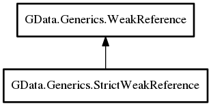

GData.Generics.StrictWeakReference – g_data_binding_gtk_lib Reference Manual
Packages
g_data_binding_gtk_lib
GData
Generics
StrictWeakReference
StrictWeakReference
set_new_target
StrictWeakReference
Object Hierarchy:

Description:
public
class
StrictWeakReference
<
T
> :
WeakReference
<
T
>
Namespace:
GData.Generics
Package:
g_data_binding_gtk_lib
Content:
Creation methods:
public
StrictWeakReference
(
T
set_to_target =
null
,
WeakReferenceInvalid
? notify_method =
null
)
Methods:
public
override
bool
set_new_target
(
T
new_target)
Inherited Members:
All known members inherited from class GData.Generics.WeakReference
target
is_valid_ref
reset
set_new_target
_target